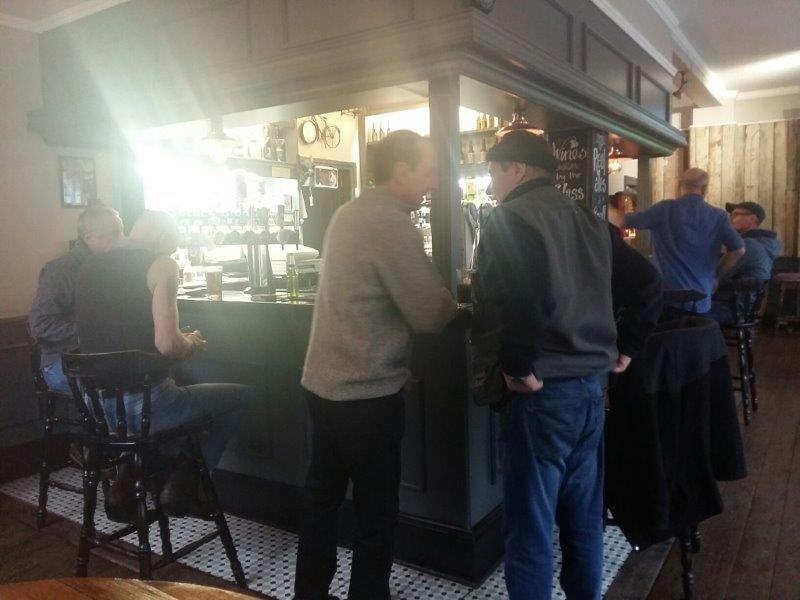
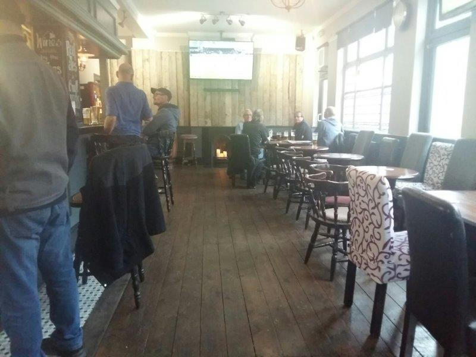
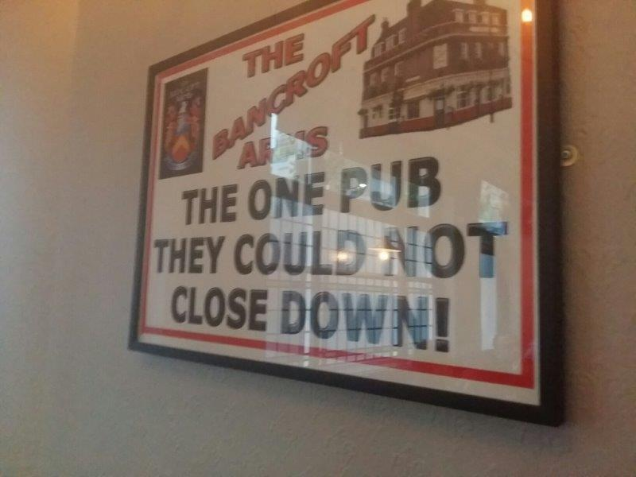
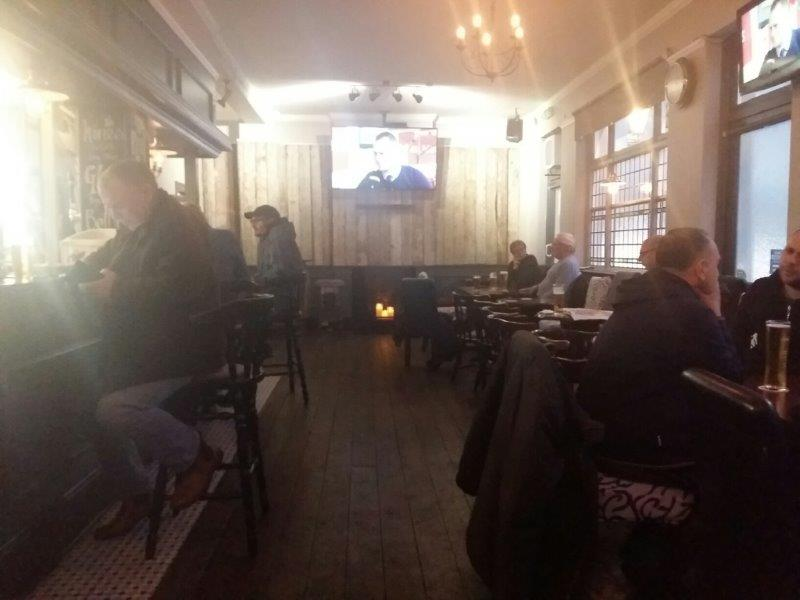

JIMMY BOOZERS' PHOTOS
   
×

London East End. Proper dirty boozer territory. Part way between Mile End and Stepney Green tube stations lives The Bancroft Tavern. As I enter I can see the football is on. No commentary but sure they have the option for it. Glad it's not on because it's not a big game, and would rather listen to the locals. Can tell it would be lively in here for a big West Ham game. Order a Guinness. While waiting for it to settle I can't help but notice a lad sat at the bar with a wife beater on, in January, coupled with a cravat. Shaved head. Looks like a right nutter. Like a fucked up right said Fred. Try my best not to stare. I definitely don't judge. There shall be no judgement in a dirty boozer. Everyone knows each another here. Literally everyone. But, again I feel very welcome. Another lad is virtually asleep at the bar, perhaps tired from working through his Guinness. Find out the lad asleep is the bar ladies fella, sat on the right side of the bar, drinking, sleeping, living the dream. Guinness £3.80 Decent. You can get a £3.30 pint during the week during the multiple happy hours on offer. The decor isn't quite traditional Victorian but is decent enough. It's had a lick of paint but has still kept most of it's charm. A sign proudly proclaims "The Bancroft Tavern - The one pub they couldn't shut down". Not sure the full history, but likely in reference to the large scale downfall of the independent boozer. As I sit enjoying the banter amongst the regulars, the staff come around with platters of pork pies, and also fish-sticks, offering them to everyone in the pub! What a time to be alive! I accept both but immediately regret the jumbo fish-stick, I mean what the fuck are they about? Still, such generosity is few and far between these days. You wouldn't get offered a glass of pish for free in an All Bar One, in fact they'd probably charge you 3 quid for it. I recently paid over a fiver for a bowl of nuts in Shoreditch. Fuck that! Just as I'm about to leave a nice lady enters and walks around flogging cigarettes and dvds. Fantastic. Right Said Fred gets some fags. Summary Quality entertainment for a Sunday
Bevvie Value - 4/5
Football Viewing Arrangements - 4/5
Fellow Clientele - 4/5
Banter & Vibe - 4/5
410 Mile End Rd, Stepney, London E1 4RQ, UK